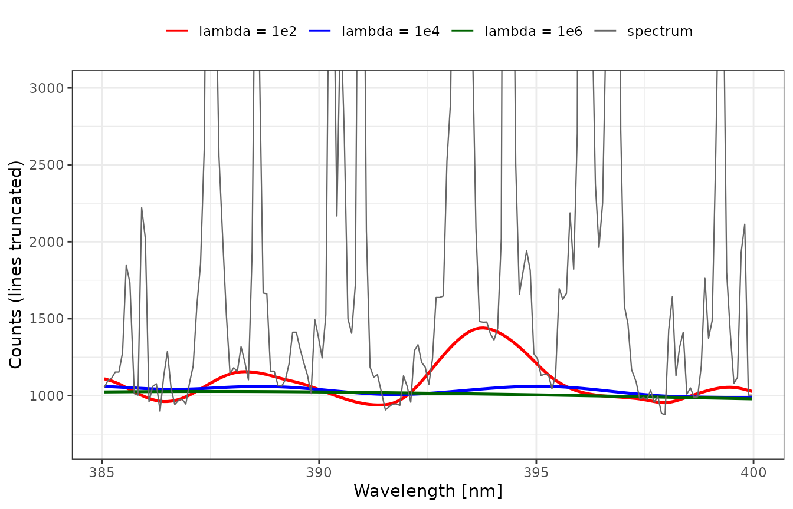
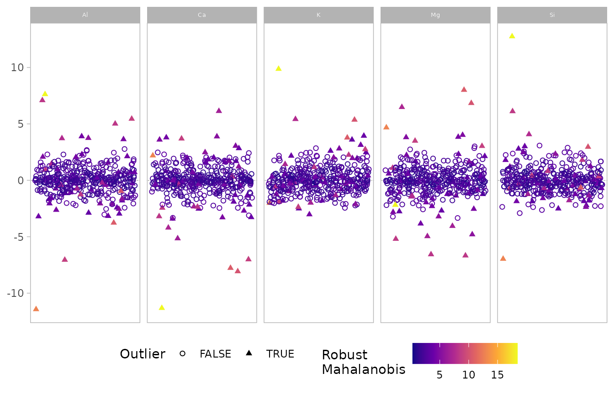
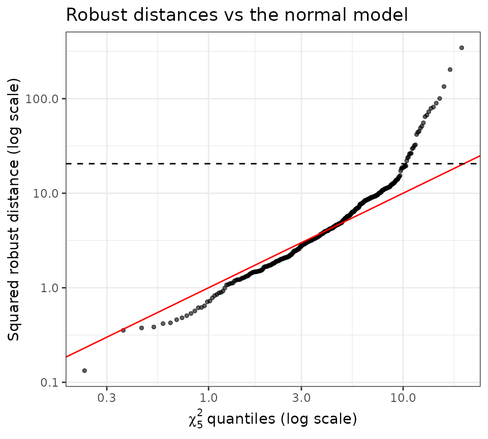
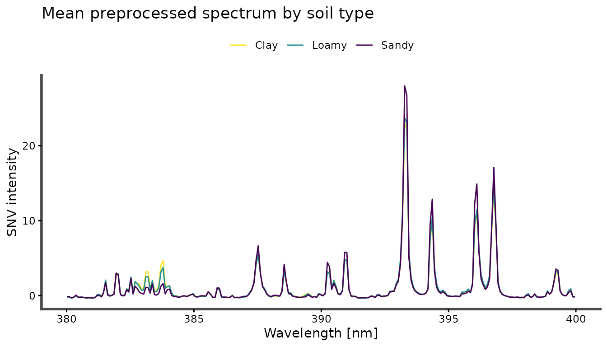
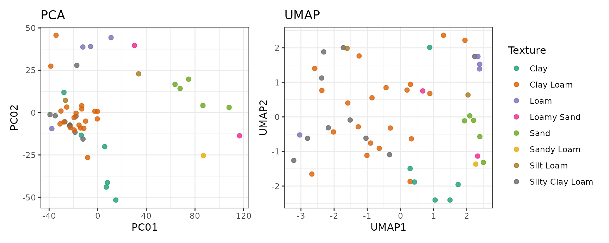
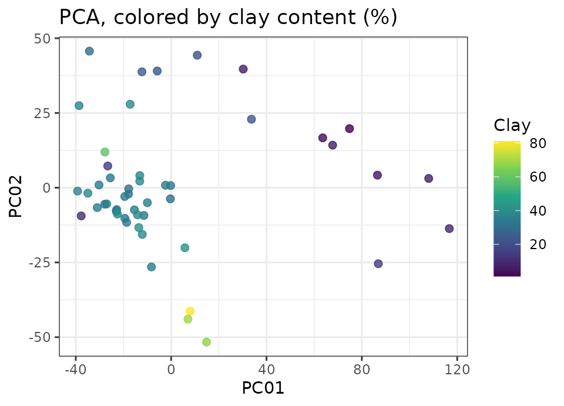

This vignette takes the raw spectra of the soilLIBS data
set through a preprocessing pipeline: baseline correction,
normalization, screening for outlying shots, and averaging of
replicates. Every step is a modeling choice. For each one, the vignette
shows how to check the choice against the data rather than assuming
it.
The preprocessing steps are written as recipes steps
(step_baseline(), step_snv(),
step_msc(), step_line_ratio(),
step_reject_shots()), so the same pipeline can later be
estimated on calibration data and applied to new spectra, or tuned
within a tidymodels workflow.
library(specProc)
library(recipes)
library(dplyr)
library(tidyr)
library(ggplot2)
data(soilLIBS)
meta_cols <- c("Sample", "Location", "Clay", "Sand", "Silt", "Texture", "Structure", "Type")
channels <- setdiff(names(soilLIBS), meta_cols)
wl <- as.numeric(channels)The data and its structure
soilLIBS contains 400 spectra of 50 soil samples. Each
sample was measured at 8 locations, and each spectrum has 7152 channels
between 199 and 822 nm, stored as raw detector counts.
soilLIBS |> count(Sample, name = "locations") |> count(locations, name = "samples")
#> # A tibble: 1 × 2
#> locations samples
#> <int> <int>
#> 1 8 50
soilLIBS |>
select(all_of(channels)) |>
unlist(use.names = FALSE) |>
summary()
#> Min. 1st Qu. Median Mean 3rd Qu. Max.
#> 634.0 764.0 826.0 951.7 928.0 28446.0Two features of the data shape everything that follows:
- Replicates are nested within samples. The 8 spectra of a sample share its composition and differ only by shot-to-shot variability and small-scale heterogeneity. Statistics that treat them as independent overstate precision.
- The counts include a large detector offset. The smallest count is about 630, not zero. Any ratio, relative standard deviation or normalization computed on uncorrected counts is diluted by this offset.
We track five emission lines throughout, measured with
line_intensities() as the area within ±0.15 nm of the line
center (search = 0 keeps the window at the tabulated
wavelength rather than at the peak of each spectrum):
lines <- c(`Mg II 279.55` = 279.55, `Si I 288.16` = 288.16, `Ca II 393.37` = 393.37,
`Al I 396.15` = 396.15, `K I 766.49` = 766.49)
# Line areas of a table of spectra that has a Sample column, one column per line
line_areas <- function(spectra) {
areas <- line_intensities(spectra[c("Sample", channels)], lines, search = 0)
areas |>
mutate(row = cumsum(line == names(lines)[1])) |>
select(row, Sample, line, intensity) |>
pivot_wider(names_from = line, values_from = intensity) |>
select(-row)
}Step 1: Baseline correction
step_baseline() estimates the continuum of each
spectrum, by default with asymmetrically reweighted penalized least
squares (baseline_arpls()). Its smoothing parameter
lambda sets how stiff the baseline is: small values follow
narrow features and can eat into emission lines, while large values miss
curvature of the continuum. To look at the estimated baseline itself, we
call baseline_arpls() on the first spectrum:
spectrum1 <- soilLIBS[1, channels]
fitted_baselines <- lapply(c(`1e2` = 1e2, `1e4` = 1e4, `1e6` = 1e6), function(l) {
unlist(baseline_arpls(spectrum1, lambda = l, max.iter = 20)$background)
})
tibble(wavelength = wl, spectrum = unlist(spectrum1), !!!fitted_baselines) |>
filter(wavelength > 385, wavelength < 400) |>
pivot_longer(-wavelength, names_to = "curve", values_to = "counts") |>
mutate(curve = if_else(curve == "spectrum", curve, paste("lambda =", curve))) |>
ggplot(aes(wavelength, counts, colour = curve, linewidth = curve == "spectrum")) +
geom_line() +
scale_linewidth_manual(values = c(`TRUE` = 0.4, `FALSE` = 0.9), guide = "none") +
scale_colour_manual(values = c(spectrum = "grey40", `lambda = 1e2` = "red",
`lambda = 1e4` = "blue", `lambda = 1e6` = "darkgreen")) +
coord_cartesian(ylim = c(700, 3000)) +
labs(x = "Wavelength [nm]", y = "Counts (lines truncated)", colour = NULL) +
theme_bw() +
theme(legend.position = "top")
With lambda = 1e2, the baseline rises into the base of
the Ca and Al lines and removes part of their area. Since the baseline
is an estimate, check how sensitive the quantity you care about is to
lambda. We bake the first sample’s 8 spectra through a
one-step recipe for each value:
first_sample <- soilLIBS |> filter(Sample == first(Sample))
baseline_recipe <- function(data, lambda) {
recipe(~ ., data = data) |>
update_role(all_of(meta_cols), new_role = "id") |>
step_baseline(all_predictors(), lambda = lambda, options = list(max.iter = 20))
}
sensitivity <- tibble(lambda = c(1e3, 1e4, 1e5, 1e6, 1e7)) |>
mutate(areas = lapply(lambda, function(l) {
baseline_recipe(first_sample, l) |>
prep() |>
bake(new_data = NULL) |>
line_areas() |>
summarise(across(-Sample, mean))
})) |>
unnest(areas)
sensitivity |>
mutate(lambda = format(lambda, scientific = TRUE), across(-lambda, round))
#> # A tibble: 5 × 6
#> lambda `Mg II 279.55` `Si I 288.16` `Ca II 393.37` `Al I 396.15` `K I 766.49`
#> <chr> <dbl> <dbl> <dbl> <dbl> <dbl>
#> 1 1e+03 1692 1245 2757 1511 184
#> 2 1e+04 1695 1249 2769 1514 185
#> 3 1e+05 1705 1247 2771 1518 185
#> 4 1e+06 1726 1245 2771 1518 189
#> 5 1e+07 1740 1248 2774 1519 192Across four orders of magnitude of lambda, the areas of
the strong lines change by less than 3%. The weak K line, which sits on
a relatively larger continuum, changes by about 4%. The line areas are
therefore robust to this choice for strong lines, but not entirely for
weak ones. We use lambda = 1e5, the smallest value at which
the baseline stays clear of the line wings in the plot above. For your
own data, run the same check on a few representative spectra.
step_baseline() also offers asymmetric least squares
(method = "als", with an explicit asymmetry parameter
p) and iterative polynomial fitting
(method = "lsp"), the methods of
baseline_als() and baseline_lsp(). Baseline
correction works on each spectrum alone, so it estimates nothing from
the training data; lambda can nevertheless be tuned with
tune::tune() when the pipeline is part of a model.
Step 2: Normalization
Normalization aims to remove multiplicative, shot-to-shot fluctuations in the amount of ablated material and plasma conditions. It’s often judged by the relative standard deviation (RSD) of lines across replicates alone. That criterion is incomplete, because a transformation that shrinks every spectrum toward a common shape also reduces RSD, while destroying the between-sample differences we want to measure.
A better criterion compares both sources of variation. The intraclass correlation (ICC) is the fraction of total variance that lies between samples rather than between replicates of a sample. The higher it is, the better a line discriminates between samples relative to its measurement noise. We estimate it from a one-way random-effects ANOVA:
icc <- function(v, group) {
# constant (up to rounding) within the data: no variance to decompose
if (stats::sd(v) <= 1e-8 * abs(mean(v))) return(NA_real_)
fit <- stats::anova(stats::lm(v ~ factor(group)))
k <- mean(table(group))
msb <- fit[1, "Mean Sq"]
msw <- fit[2, "Mean Sq"]
(msb - msw) / (msb + (k - 1) * msw)
}
rsd <- function(v, group) {
median(tapply(v, group, function(z) sd(z) / mean(z) * 100))
}We compare no normalization, total-area normalization, SNV, MSC, and
internal standardization to the Si I 288.16 nm line. All are recipe
steps added after the baseline: step_spectral_norm()
divides each spectrum by its total area (or its L1, L2 or maximum norm),
and step_line_ratio() by the area of a reference line:
normalized <- function(step, ...) {
baseline_recipe(soilLIBS, 1e5) |>
step(all_predictors(), ...) |>
prep() |>
bake(new_data = NULL)
}
candidates <- list(
`baseline only` = baselined,
`area` = normalized(step_spectral_norm, method = "area"),
`SNV` = normalized(step_snv),
`MSC` = normalized(step_msc),
`internal std. (Si)` = normalized(step_line_ratio, reference = 288.16, window = 0.15)
)
scores <- candidates |>
lapply(line_areas) |>
bind_rows(.id = "normalization") |>
pivot_longer(all_of(names(lines)), names_to = "line") |>
mutate(normalization = factor(normalization, levels = names(candidates)),
line = factor(line, levels = names(lines))) |>
group_by(normalization, line) |>
summarise(RSD = rsd(value, Sample), ICC = icc(value, Sample), .groups = "drop")
wide <- function(stat) {
scores |>
select(normalization, line, all_of(stat)) |>
pivot_wider(names_from = line, values_from = all_of(stat)) |>
mutate(across(-normalization, \(v) round(v, 2))) |>
as.data.frame()
}
wide("RSD") # median within-sample RSD (%)
#> normalization Mg II 279.55 Si I 288.16 Ca II 393.37 Al I 396.15
#> 1 baseline only 5.94 8.36 7.06 7.60
#> 2 area 4.57 7.00 5.51 5.59
#> 3 SNV 4.17 5.99 4.05 5.05
#> 4 MSC 4.10 5.90 4.02 4.91
#> 5 internal std. (Si) 6.55 0.00 7.70 6.55
#> K I 766.49
#> 1 12.35
#> 2 13.51
#> 3 17.18
#> 4 13.46
#> 5 13.47
wide("ICC") # fraction of variance between samples
#> normalization Mg II 279.55 Si I 288.16 Ca II 393.37 Al I 396.15
#> 1 baseline only 0.90 0.76 0.81 0.77
#> 2 area 0.63 0.64 0.69 0.73
#> 3 SNV 0.81 0.51 0.60 0.67
#> 4 MSC 0.80 0.56 0.66 0.70
#> 5 internal std. (Si) 0.79 NA 0.41 0.33
#> K I 766.49
#> 1 0.86
#> 2 0.48
#> 3 0.54
#> 4 0.51
#> 5 0.66The two criteria disagree, and the disagreement is informative:
- SNV and MSC give the best repeatability. They reduce the replicate RSD of the Mg, Ca and Al lines by a third or more compared with baseline correction alone.
- They also lower the ICC. A lower ICC means the between-sample variance shrank even more than the within-sample variance. Normalization removes multiplicative variation, and part of the multiplicative variation between samples is systematic: soils of different texture ablate and emit differently.
- Replicates alone cannot say whether that variation is useful. If the between-sample intensity differences are a matrix effect unrelated to the property of interest, removing them helps. If they carry information about it, removing them hurts. Only a validated model of that property can decide; the calibration vignette does this for clay content.
- The weak K line is a special case. SNV increases its RSD: dividing by the whole-spectrum standard deviation adds that statistic’s noise to a line that is itself noisy.
- Internal standardization by Si is not usable here. It sets the Si line to a constant, so its own RSD and ICC are meaningless. It also assumes the silicon content is constant across samples, which is false for soils ranging from clay to sand. It lowers the ICC of every other line.
No normalization is universally best, so choose one on data from the
matrix at hand, and confirm the choice against the end goal. We continue
with SNV, the most repeatable option, and revisit the choice in the
calibration vignette. Note that step_msc() estimates its
reference spectrum from the data it is prepped on, so in a model it must
be prepped on calibration data only; within a workflow, this happens
automatically.
normalized_snv <- candidates$SNVStep 3: Screening outlying shots
A misfired or defocused shot can bias a sample’s mean spectrum. Outliers must be judged relative to the other shots of the same sample, because the differences between samples are real signal. We therefore remove each sample’s median from its line intensities, and look for shots that are outlying in this within-sample deviation space.
deviation <- normalized_snv |>
line_areas() |>
group_by(Sample) |>
mutate(across(everything(), \(v) v - median(v))) |>
ungroup() |>
select(-Sample) |>
rename_with(\(nm) sub(" .*", "", nm))plot_outliers() computes robust (MCD) Mahalanobis
distances, which account for the correlation between lines. It then
displays the standardized deviation of every shot for each variable:
plot_outliers(deviation, quan = 0.75, show.mahal = TRUE)
The default cutoff of plot_outliers() flags a large
share of the shots:
screen <- plot_outliers(deviation, quan = 0.75, show.outlier = FALSE, show.mahal = FALSE)
count(screen, flagged = outlier)
#> # A tibble: 2 × 2
#> flagged n
#> <lgl> <int>
#> 1 FALSE 352
#> 2 TRUE 48That is about 11% of the shots, far more than the few gross errors one would expect from misfires. Before discarding anything, compare the distribution of the squared robust distances with the χ² distribution they would follow if the within-sample deviations were multivariate normal:
p <- ncol(deviation)
qq <- tibble(
observed = sort(screen$mahalanobis^2),
theoretical = stats::qchisq(stats::ppoints(length(observed)), df = p)
)
ggplot(qq, aes(theoretical, observed)) +
geom_point(size = 1, alpha = 0.6) +
geom_abline(colour = "red") +
geom_hline(yintercept = stats::qchisq(0.999, p), linetype = "dashed") +
scale_x_log10() +
scale_y_log10() +
labs(x = expression(chi[5]^2 ~ "quantiles (log scale)"),
y = "Squared robust distance (log scale)",
title = "Robust distances vs the normal model") +
theme_bw()
The bulk of the shots follows the reference line: the median distance matches its χ² expectation. The upper tail is much heavier than the normal model predicts. Most of these shots are not errors: they reflect genuine heterogeneity of the soil at the scale of the laser spot. Discarding them would bias each sample’s mean toward its most homogeneous spots.
A defensible rule is to remove only the gross outliers, beyond the 99.9% quantile of the χ² distribution, and to report how many shots were removed:
shots <- normalized_snv |>
mutate(flagged = screen$mahalanobis^2 > stats::qchisq(0.999, p))
sum(shots$flagged)
#> [1] 26
shots |> filter(!flagged) |> count(Sample, name = "shots_kept") |> count(shots_kept)
#> # A tibble: 6 × 2
#> shots_kept n
#> <int> <int>
#> 1 3 1
#> 2 4 2
#> 3 5 1
#> 4 6 3
#> 5 7 4
#> 6 8 39
shots |> filter(flagged) |> count(Sample, sort = TRUE) |> head(5)
#> # A tibble: 5 × 2
#> Sample n
#> <chr> <int>
#> 1 MRI007 5
#> 2 MRI001 4
#> 3 MRI004 4
#> 4 MRI016 3
#> 5 MRI009 2Most samples keep all 8 shots. The few samples that lose several shots are heterogeneous and deserve inspection: their mean spectrum rests on fewer measurements and is less certain.
Whole-spectrum screening with reject_shots()
The screen above looks at five lines. reject_shots()
looks at whole spectra instead, with two robust z-scores computed within
each sample: the total intensity of each shot, which flags weak or
missed plasmas, and its correlation with the median spectrum of the
sample, which flags shots of a different shape (another mineral grain, a
contaminated spot). The total intensity is meaningful only before
normalization, since SNV gives every spectrum a mean of zero, so we
screen the baseline-corrected spectra:
whole <- reject_shots(baselined, Sample)
count(whole, .reason)
#> # A tibble: 4 × 2
#> .reason n
#> <chr> <int>
#> 1 correlation 21
#> 2 intensity 4
#> 3 intensity, correlation 6
#> 4 NA 369
count(whole, lines = shots$flagged, whole_spectrum = .rejected)
#> # A tibble: 4 × 3
#> lines whole_spectrum n
#> <lgl> <lgl> <int>
#> 1 FALSE FALSE 352
#> 2 FALSE TRUE 22
#> 3 TRUE FALSE 17
#> 4 TRUE TRUE 9The two screens flag different shots, because they look at different
things: a shot can have normal intensities for the five lines and a
different spectrum elsewhere, or the reverse. With 8 shots per sample,
the median and MAD of each sample are themselves uncertain, so a cutoff
of 3.5 (the default) still flags some legitimate heterogeneity; raise
cutoff to keep only the gross outliers. Whatever the
screen, report how many shots it removed.
Step 4: Averaging replicates
With the screened shots, average() reduces each sample
to one mean spectrum. It is implemented in C++ and handles the full
matrix in a fraction of a second:
sample_spectra <- shots |>
filter(!flagged) |>
select(Sample, all_of(channels)) |>
average(Sample)
dim(sample_spectra)
#> [1] 50 7153The mean of the remaining shots still includes the heavy-tailed but legitimate variability discussed above. If you prefer not to screen at all, the per-sample median of each channel is a robust alternative to the mean, but it is less efficient when the data are close to normal.
The result
The preprocessed, sample-level data set is ready for exploratory analysis or calibration:
zoom <- channels[wl > 380 & wl < 400]
sample_spectra |>
left_join(distinct(soilLIBS, Sample, Type), by = "Sample") |>
select(Type, all_of(zoom)) |>
average(Type) |>
plot_spectra(id = Type) +
theme(legend.position = "top") +
labs(color = NULL, y = "SNV intensity", title = "Mean preprocessed spectrum by soil type")
Exploring the samples
A map of the samples shows which of them have similar spectra.
Principal component analysis (PCA) gives a linear map: its axes are
directions of maximal variance, and distances on the map are distances
between the spectra. UMAP (uniform manifold approximation and
projection, through embed::step_umap()) gives a nonlinear
map that keeps the neighbors of each sample together. With 7152 channels
and 50 samples, UMAP is run on the first 10 principal components, which
hold the structure of the data and drop most of the noise.
plot_embedding() draws either map:
sample_info <- distinct(soilLIBS, Sample, Texture, Clay)
map_data <- sample_spectra |> left_join(sample_info, by = "Sample")
map_recipe <- recipe(~ ., data = map_data) |>
update_role(Sample, Texture, Clay, new_role = "id") |>
step_normalize(all_predictors()) |>
step_pca(all_predictors(), num_comp = 10)
pca_map <- map_recipe |> prep() |> bake(new_data = NULL)
set.seed(1)
umap_map <- map_recipe |>
embed::step_umap(all_predictors(), neighbors = 10, min_dist = 0.1) |>
prep() |>
bake(new_data = NULL)
patchwork::wrap_plots(
plot_embedding(pca_map, colour = Texture, title = "PCA"),
plot_embedding(umap_map, colour = Texture, title = "UMAP"),
guides = "collect"
)
On the PCA map, the sands (right) and the clays (bottom) stand apart,
with the loams in between: the spectra follow texture before any model
is fitted. The UMAP map is less clear. It spreads the samples evenly,
and the sands end up next to the clays. This is not a failure of the
method but a reminder of what it does: UMAP keeps the nearest neighbors
of each sample, and with 50 samples and neighbors = 10,
each neighborhood holds a fifth of the data, while the sizes of the
groups and the distances between them depend on neighbors,
min_dist and the random seed. UMAP is most useful on large
data sets with local structure, such as thousands of shots. PCA keeps
distances, so on a data set of this size it is the more faithful map,
and a sample far from the others on it really has an unusual
spectrum.
Coloring the PCA map by a continuous property shows whether it varies smoothly with the main directions of the spectra:
plot_embedding(pca_map, colour = Clay, title = "PCA, colored by clay content (%)")
The clay content increases from the sands to the clays across the
map. A supervised UMAP
(embed::step_umap(outcome = vars(Clay))) would arrange the
samples by clay content, but it uses the outcome: like any supervised
step, it must then be estimated within resampling, never on all the data
before cross-validation.
The same pipeline, written as one recipe, can be estimated on calibration spectra and applied to new ones:
pipeline <- recipe(~ ., data = soilLIBS) |>
update_role(all_of(meta_cols), new_role = "id") |>
step_baseline(all_predictors(), lambda = 1e5, options = list(max.iter = 20)) |>
step_reject_shots(all_predictors(), sample = Sample) |>
step_snv(all_predictors())
pipeline
#>
#> ── Recipe ──────────────────────────────────────────────────────────────────────
#>
#> ── Inputs
#> Number of variables by role
#> predictor: 7152
#> id: 8
#>
#> ── Operations
#> • Baseline correction on: all_predictors()
#> • Shot rejection (intensity, correlation) on: all_predictors()
#> • Standard normal variate on: all_predictors()step_reject_shots() removes rows, so it is skipped when
new data are baked (skip = TRUE): the rejected shots are
left out of the model fit, but a prediction is still made for every new
spectrum. Keep the shots of a sample together when resampling, for
example with rsample::group_vfold_cv(group = Sample). To
model sample means rather than shots, screen and average before the
recipe, as in Steps 3 and 4.
The companion vignettes use this pipeline to fit emission lines
(vignette("line-fitting", package = "specProc")) and to
build a calibration model for clay content
(vignette("calibration", package = "specProc")).